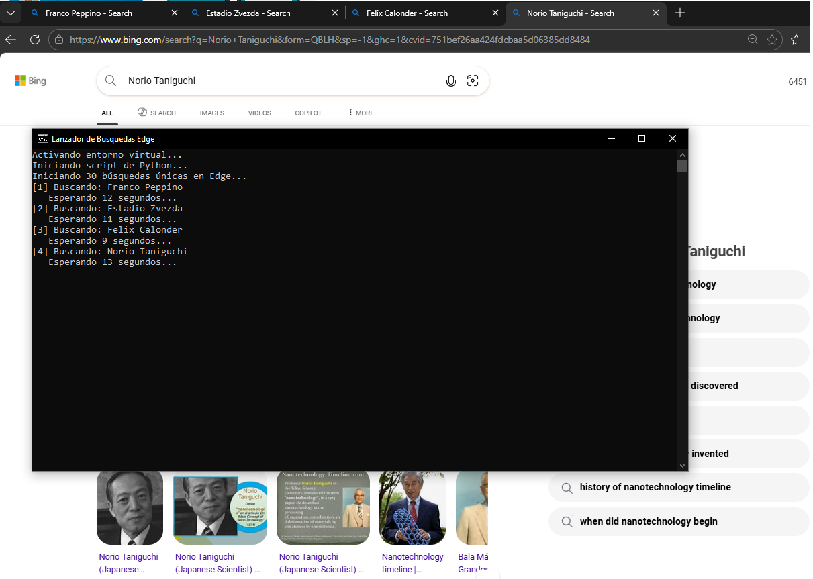
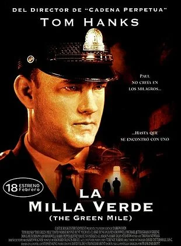

ClinicFlow
Plataforma web para la comercialización de planes de suscripción de ClinicFlow, un sistema de gestión de pacientes.
Hola, soy Mike. Cuento con una base sólida en Ciencias tras años de estudio en Ingeniería Civil y actualmente me encuentro cursando las tecnicaturas en Desarrollo de Software y Desarrollo Web.
En mi día a día, aplico herramientas como Python para automatizar procesos y gestionar datos en el sector administrativo de salud. Mi objetivo es consolidarme como desarrollador, integrando la lógica de programación con la ingeniería de datos para crear soluciones eficientes y escalables.

Plataforma web para la comercialización de planes de suscripción de ClinicFlow, un sistema de gestión de pacientes.

Aplicación móvil robusta creada con Kotlin para la administración de socios, actividades y pagos en un Club Deportivo.

Diseño y desarrollo de un sitio institucional para una empresa de software médico, utilizando WordPress para la gestión de contenidos y presentación de servicios profesionales.

Script de automatización en Python que valida flujos de navegación y búsqueda en Microsoft Edge utilizando la API de Wikipedia. Simula búsquedas reales con tiempos de espera aleatorios.
| Categoría | Tecnologías / Actividades |
|---|---|
| Dominio Técnico | Python, Java, C#, HTML, CSS, JavaScript |
| Herramientas de Datos | Microsoft Fabric, SQL, Automatización de procesos |
| En aprendizaje | Ingeniería de Datos avanzada, Kotlin, Android Studio |
| Mis Hobbies | Leer, Taekwondo, Padel, Gaming (DDO, LoL), Jardinería |

La misión de Frodo y la Compañía para destruir el Anillo Único en el Monte del Destino. Una epopeya sobre la resistencia ante la corrupción y la lucha definitiva contra el Señor Oscuro Sauron.

La batalla final por la Tierra Media comienza en Minas Tirith. Mientras Aragorn reclama su destino como rey para liderar a Gondor, Frodo y Sam alcanzan los límites de su resistencia en las entrañas de Mordor.
Neo, un hacker atrapado en una realidad simulada, debe elegir entre la ignorancia de su vida anterior o unirse a la resistencia liderada por Morfeo. Una obra fundamental que explora la dualidad entre el mundo digital y la libertad humana.

Ambientada en la Gran Depresión, narra la vida de un guardia de prisión que descubre que un condenado a muerte posee dones mágicos. Una historia profunda sobre la injusticia y la empatía.